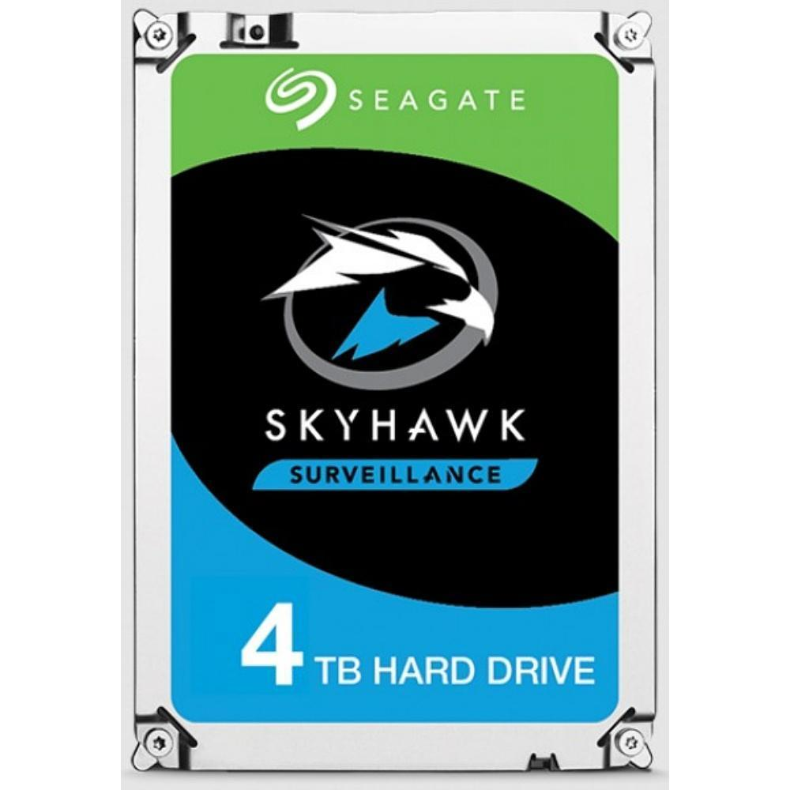

Armazenamento
PARA ESCOLHER O ARMAZENAMENTO DEVEMOS PRESTAR ATENÇÃO NAS SEGUINTES INFORMAÇÕES:
Decida o tipo de uso:
O primeiro passo antes de decidir qual armazenamento instalar no PC é importante saber o tipo de uso que a máquina terá. Para muitos usuários que buscam alto desempenho em multitarefas e executar programas mais pesados, o SSD vai funcionar melhor em razão da alta velocidade. Apesar disso, o preço por GB (gigabyte) é bem mais alto.Estipule um limite de preço:
Outra dica importante é estipular um limite de preço. Isso porque ao delimitar um valor, é possível filtrar com mais facilidade quais opções se tornam viáveis ou não. Enquanto um SSD de 512 GB pode ser comprado com preço médio de R$ 650, um HD, com o dobro de capacidade de armazenamento, é vendido no mercado brasileiro com preço na faixa dos R$ 350.Escolha uma opção de tamanho:
Tendo em mente o tipo de uso do computador, o usuário precisa definir o tamanho de armazenamento necessário. Assim você evita problemas como comprar uma unidade de pouco espaço, sendo necessário adquirir outro componente no futuro, ou até mesmo um modelo além do necessário e que tenha muitos GBs sobrando.PRODUTOS
HD Interno Seagate 16TB SkyHawk AI, 256Mb, 3.5, para Vigilância, SATA - ST16000VE002

A Vista: R$ 2.099,99
A Prazo: R$ 2.470,58 Em até 10x de R$ 247,05 sem juros no cartão Ou em 1x no cartão com até 10% OFF
HD Interno Seagate SkyHawk AI, 10TB, SATA 6Gb/s - ST10000VE001

A Vista: R$ 1.899,99
A Prazo: R$ R$ 2.235,28 Em até 10x de R$ 223,52 sem juros no cartão Ou em 1x no cartão com até 10% OFF
HD Seagate 4TB SkyHawk Surveillance, 5900 RPM, Cachê 64MB, 3.5, SATA III
A Vista: R$ 949,05
A Prazo: R$ 999,00 Em até 10x de R$ 99,90 sem juros no cartão Ou em 1x no cartão com até 5% OFF